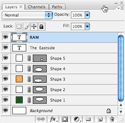
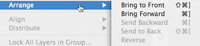

Don't Be Scared ... It's Time For Layers:
For some, layers can be very confusing. Well, I've got news for you: they're not.
Layers are really quite simple. Just think of your logo as a cake. It has many different layers that are all created separately and put together to make one cohesive creation. That could be a really bad example, but I want you to think of your logo as different pieces. The shapes are in different layers and the text is in it's own layer. In order to move each part of the logo, you have to create each one on a separate layer.
At this stage of logo creation, you might have already had to deal with layers. Maybe you didn't know what they were or the potential each one had, but I'll try to explain them the best I can.
To create a new layer, go to the window on the right side labeled "Layers." It's usually on the bottom. On the bottom of this little window, there is a small square next to the trashcan icon. If you press that, a new layer will be created. This allows you to add new elements to your icon that can be moved independently from the other elements.
Once you have created your different elements, you can change the placement of each one. For example, if you want to bring an element forward, you can move it two different ways. Click, hold down and move it in the layers window, or go to the layers tab at the menu bar on the top of the screen and click "arrange."
You can also move multiple layers on the logo. Make sure to have the "move" tool selected, and then hit control (or command on Macintosh computers) to select more than one layer. Then move the elements with the arrow keys or with your mouse.